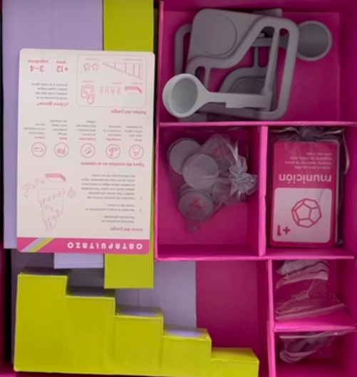
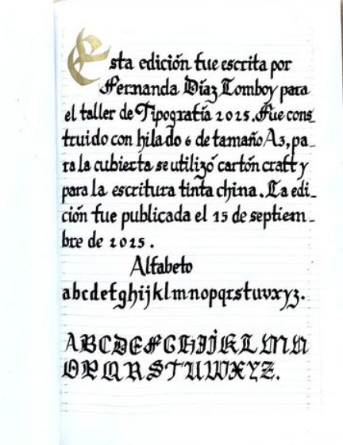

01
PROYECTO 01
Proyecto de Ornamentación de la Fiesta de San Pedro — Hortensia
Propuesta de diseño vinculada a la ornamentación y celebración de la Fiesta de San Pedro.
PORTAFOLIO · DISEÑO
Una selección de proyectos, talleres y experiencias desarrolladas durante mi formación en diseño.
PRESENTACIÓN
Soy Fernanda Diaz Lomboy, estudiante de Diseño. Ingresé a la Escuela de Arquitectura y Diseño el año 2022.
Durante mi formación he cursado variados talleres de diseño gráfico e industrial, explorando distintas maneras de relacionar la forma, la función, los materiales y la experiencia de las personas.
SELECCIÓN DE TRABAJOS
PROYECTO 01
Propuesta de diseño vinculada a la ornamentación y celebración de la Fiesta de San Pedro.

02PROYECTO 02
Proyecto de juego y experiencia interactiva desarrollado desde el diseño.

03PROYECTO 03
Trabajo editorial y tipográfico centrado en la construcción visual de un manuscrito.
FORMACIÓN
PRIMER TALLER
Exploración de la letra, la escritura y la composición tipográfica.
SEGUNDO TALLER
Trabajo de exploración espacial y formal desde distintas escalas.
FIN DEL PORTAFOLIO